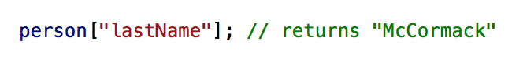

The DOM, HTML vs CSS, Javascript
Sprint Three Technical Blog | Sunday 29th November, 2020
An analogy to describe the differences between HTML and CSS.
HTML defines the content and structure of a webpage. HTML would be the skeleton of a body. The skeleton holds everything together and provides the base to support organs and muscles. HTML creates all the content of a website however it doesn't do very much on its own and it won’t look very nice. This is why CSS is required to style the HTML elements. If HTML is the skeleton, then CSS is the skin. CSS changes the appearance of websites, by defining colour, fonts, layouts etc. The styling is what makes a web page more appealing to look at.
Explain control flow and loops using an example process from everyday life.
Control flow is the order in which statements and functions are executed, which is from top to bottom, in the order that they appear. This flow can be broken up by conditional statements and loops.
Loops are a way to repeatedly run some code. A condition is required to determine how long the loop will iterate.
Looping statements in JavaScript:
- For: Allows us to repeatedly run some code until an expression we specify returns false.
- While: Repeats some code until its condition returns false.
- Do… While: has its conditional expression at the end, this ensures that the code inside the loop will run at least once.
An example of control flow and loops in everyday life would be when following a recipe for a banana cake.
- Cream the butter and sugar until light and fluffy.
- Add the eggs one at a time, beating well after each addition
- Add the mashed banana and mix well.
- Stir the baking soda into the hot milk and add to the creamed mixture.
- Sift the dry ingredients together and fold through the creamed mixture.
- Scoop the mixture into a tin, and bake at 180ºC for 50 minutes or until the cake springs back when lightly touched.
- Leave in tin for 10 minutes before turning out onto a wire rack to cool. When cold, ice with Chocolate Icing or dust with icing sugar.
This recipe is an example of control flow where you must complete each task from top to bottom. For each step there are tasks that are repeated until a condition has been met.
Describe what the DOM is and an example of how you might interact with it.
The DOM (Document Object Model) is a hierarchical structure that the browser uses to make sense of a document. Everything that makes up the DOM are known as nodes. The nodes of every document are organized in a tree structure. It is the way through which Javascript can access and modify elements of a HTML document.
Explain the difference between accessing data from arrays and objects.
Arrays
An array stores several pieces of data in one place. Numbers are assigned to each item inside an array starting with zero. These index values are used to access data from an array.

Objects
An object is a collection of properties. Each property is a variable with a name and a value. Dot notation or bracket notation is used to access properties of an object by using the object name and property name.
Dot notation:

Bracket notation:
If a property name has a space you must use bracket notation to access the property.
Accessing nested properties:
Explain what functions are and why they are useful.
A function is a set of reusable statements which perform a particular task.
A function declaration consists of the function keyword, the name of the function, a list of parameters in parentheses and separated by commas, and enclosed in curly brackets the function statements. Defining the function doesn't execute the function it only names the function and specifies what to do when the function is called. Calling the function is what actually invokes the specified action and includes parameters.
Functions are important as it enables you to quickly and easily reuse code. Once the function is defined, it can be called many times including with different arguments (parameters) to produce different results.